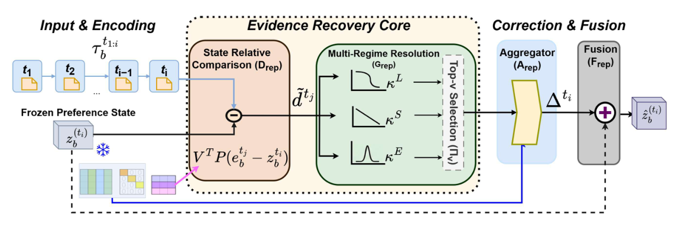

Not All Is Lost: Repairing Lossy User Preference States of Personalization Encoders (并非全盘皆失：修复个性化编码器中有损的用户偏好状态)
- 会议/期刊: NeurIPS 2026
- 作者与机构: Parthiv Chatterjee, Dhiraj Golhar, Ummesalma Diwan, Sourish Dasgupta, Manjunath Joshi, Tanmoy Chakraborty（Dhirubhai Ambani University KDM Lab / IIT Delhi LCS2 Lab）
- 推荐链路定位: 精排（编码器与任务头之间的状态修复层）
- 研究方向: 序列与会话推荐 / 大语言模型推荐
- 论文原文: 论文原文链接
- 开源代码: 暂未开源
TL;DR (1分钟核心速览)
个性化编码器把交互历史压缩成单一偏好状态 \(z_b^{(t_i)}\)交给任务头，但压缩过程丢弃了仍留在缓存逐步表征\(\{e_b^{(t_j)}\}\)中的任务相关证据，作者称之为可恢复性缺口 (recoverability gap)。REPAIR 在冻结编码器与任务头的前提下，用低秩坐标读取状态-逐步残差、经长/短/情景三支时序核解析、逐坐标 top-\(\nu\) 选择后残差融合回状态。在 MovieLens/MIND/PENS/Amazon 四个数据集、12 个推荐宿主上，仅训练 REPAIR 即让 MRR/nDCG@10 全部提升（平均 +1.96~+2.66 MRR），显著超过 head-only 微调（如 Mamba4Rec +3.96 vs +0.19 MRR）。
Background & Motivation (背景与核心矛盾)
- 主流范式: GRU4Rec/SASRec/Mamba4Rec/NRMS/LSTUR 等编码器将历史压缩为任务面向状态，下游任务头只读该状态；改进路线集中在改编码器内部表征（ReFT、激活引导）或序列去噪。
- 前人局限: ① 任务头仅见压缩状态，无法访问编码器前向计算中已算出的逐步表征，证据"欠表达"；② 现有干预手段要么重训/改编码器参数，要么在输出端事后修正，均未回答"同一冻结前向的缓存能否选择性修复已成形状态"。
- 核心洞察 (Key Insight): 信息并未彻底丢失——缓存 \(\{e_b^{(t_j)}\}\)与状态\(z_b^{(t_i)}\) 的差异可被低秩、宿主相关的紧凑校正结构捕获；且校正所需的最优时序证据不等于输入历史中证据出现的位置（copy-through 仅在 6/12 探针成立）。
- 本文切入点: 在编码器与任务头之间插入可训练的 REPAIR，只读缓存、不重编码历史，把校正作为残差加回原状态。
Method (核心方法设计)
1. 整体框架 (Overall Architecture)
宿主一次前向已产出状态 \(z_b^{(t_i)}\)与缓存逐步表征\(\{e_b^{(t_j)}\}_{j=1}^{i}\)（缓存开销\(O(Ld_e)\)）。REPAIR 先将二者投影到共享\(m\)维空间求状态相对残差，用秩-\(K\)读写算子读出\(K\)个校正坐标；去均值后经长/短/情景三支时序核解析，逐坐标自适应保留 top-\(\nu\)激活；再由状态门控与加权池化聚合成校正\(\Delta_b^{(t_i)}\)，经残差门控融合得\(\tilde{z}_b^{(t_i)}\) 送入原任务头。LLM 宿主则把修复状态映射为连续 soft prefix 注入冻结解码器。
flowchart TD
A["冻结宿主前向: 状态 z + 缓存 e(tj)"] --> B["共享空间投影 + 状态相对残差 r(tj;ti)"]
B --> C["秩-K 读写算子读出校正坐标 d(tj)"]
C --> D["去均值 + 长/短/情景三支时序核"]
D --> E["逐坐标 top-ν 选择 + 状态门控池化"]
E --> F["残差门控融合 → 修复状态 → 原任务头"]
2. 关键设计拆解 (Key Designs)
-
状态相对校正证据与低秩读写算子：逐步表征与状态空间不一致，直接相减无意义。先投影 \(\bar{e}=P_e e\)、\(\bar{z}=P_z z\)，取\(r^{(t_j;t_i)}=\bar{e}_b^{(t_j)}-\bar{z}_b^{(t_i)}\)，再用学习式（非 SVD）分解\(J_{\text{rep}}=\hat{U}_{\text{rep}}\Lambda_{\text{rep}}\hat{V}_{\text{rep}}^\top\)（\(\text{rank}\le K\)）读出\(d^{(t_j)}=\hat{V}_{\text{rep}}^\top r^{(t_j;t_i)}\)。直觉：把"缺失证据"压到\(K\)个共享校正模式上，既降噪又强制紧凑；去均值\(\tilde{d}^{(t_j)}=d^{(t_j)}-\frac{1}{i}\sum_q d^{(t_q)}\) 消去前缀共享偏移，只留时序变化量。
-
三支时序解析 + 逐坐标 top-\(\nu\)选择：共享\(\Lambda_{\text{rep}}\)无法区分"何时"有用。以 lag\(\ell_j=i-j\)定义三支核：\(\kappa^L_k=\exp(-\beta_k\ell_j)\)、\(\kappa^S_k=\max(1-\ell_j/i,0)\)、\(\kappa^E_k=\exp(\ell_j\log\xi_k-\xi_k-\log\Gamma(\ell_j+1))\)（Poisson 型局部爆发），混合得\(\eta^{(t_j)}=\sum_{\rho}W_\rho(\kappa_\rho\odot\tilde{d}^{(t_j)})\)。随后逐坐标按\(|\eta_k|\)排序，用 MLP 预测保留比例\(f_k\)，硬前向掩码 + straight-through 代理（\(\tau_{\text{sel}}=0.05\)）训练。直觉：同一交互可在某坐标贡献、在另一坐标被抑制，选择粒度细于"整条交互保留/丢弃"。
-
训练目标、负采样与推理效率：\(\mathcal{L}_{\text{repair}}=0.5\mathcal{L}_{\text{task}}+0.2\mathcal{L}_{\text{pos}}+0.3\mathcal{L}_{\text{coh}}\)，其中\(\mathcal{L}_{\text{pos}}\)做相对位置分类保时序来源、\(\mathcal{L}_{\text{coh}}\) 用分类+对比监督绑定校正激活与源交互；系数跨全部宿主固定，不做逐宿主调参。推荐训练采用 1 正 vs 499 采样负例。推理不重编码历史，但需保留缓存并跑修复模块：参数内存开销 31–36%、延迟开销 38–44%。
Experimental Setup & Evaluation Protocol (实验设置与评估协议)
- 数据集与预处理: 按 UIG 轨迹组织历史，用户不相交划分；测试用户未见但提供其观测前缀。
| 数据集 | 任务 | 宿主覆盖 | 测试实例 | 说明 |
|---|---|---|---|---|
| MovieLens | 电影推荐 | 9 个序列宿主 | 15K | GRU4Rec/SASRec/Mamba4Rec/TiSASRec/SIGMA 等 |
| MIND | 新闻推荐 | 7 个历史编码器 | 20K | NRMS/LSTUR/NAML/EBNR/SCAPE-GRU 等 |
| PENS | 新闻推荐+标题生成 | 编码器与 LLM | 20K | 含 Walk2Pers/IMPerSumm/DeepSeek-32B/Qwen2.5-32B |
| Amazon Reviews 2023 | 多模态商品推荐 | 3 个多模态宿主 | 2K | SigLIP2/OpenCLIP/DINOv2-E5 |
- 数据划分与防穿越 (Splitting Strategy): 用户不相交 (user-disjoint) 训练/测试划分；每个前缀 \(\tau_{t_1:i}\)配下一监督目标\(r^\star(t_{i+1})\)，生成任务额外给任务侧 query。
- 排名评测协议 (Ranking Protocol): Sampled Ranking——1 个真值目标 vs 499 个采样负例，报告 MRR、nDCG@5/10、Hit@10（0–100 尺度）；配对条件共享同一批留出用户、前缀、目标与候选集。
- 对比基线与超参设置: 四类对照——Original Host、Head-only FT（仅训任务头 5 epoch）、REPAIR（编码器+头全冻结）、REPAIR+Head Alignment（再联合对齐 2 epoch，编码器仍冻结）；校正秩默认 \(K=128\)；统计上用 10,000 次用户聚类 bootstrap 给 95% CI（OpenCLIP/SigLIP2/EBNR 为三 seed 均值）。
Key Experimental Results (实验关键数据)
1. 主实验对比 (Main Results)
下表摘取 6 个代表性宿主（S/M/W 分别代表原宿主最强/中/最弱），指标为 MRR / nDCG@10：
| 数据集 | 宿主 | Original Host | Head-only FT | REPAIR (Frozen Head) | REPAIR+Align |
|---|---|---|---|---|---|
| MovieLens | TiSASRec | 35.51 / 41.14 | 35.57 / 41.19 | 36.38 / 42.07 | 36.78 / 42.91 |
| MovieLens | Mamba4Rec | 29.29 / 38.50 | 29.48 / 38.89 | 33.25 / 39.20 | 34.26 / 40.17 |
| PENS | LSTUR | 10.44 / 12.15 | 10.98 / 12.32 | 11.98 / 12.71 | 12.85 / 15.88 |
| MIND | LSTUR | 51.43 / 59.63 | 52.37 / 59.96 | 54.17 / 62.27 | 55.84 / 66.92 |
| Amazon | OpenCLIP | 1.59 / 1.05 | 2.21 / 2.17 | 4.43 / 4.66 | 19.49 / 22.08 |
| Amazon | SigLIP2 | 2.40 / 2.18 | 2.67 / 2.72 | 4.16 / 4.05 | 17.72 / 20.35 |
四数据集上 REPAIR（冻结头）平均 MRR/nDCG@10 增益分别为 +2.66/+2.63、+2.29/+2.16、+1.96/+3.08、+2.19/+2.55；head-only FT 平均 MRR 仅 +0.29/+0.76/+0.72/+0.68，12/12 设置均被 REPAIR 反超。
2. 消融实验 (Ablation Study)
| 配置 | 关键结果 | 说明 |
|---|---|---|
| 校正秩 \(K\)=32/64/128/192 | 128 在 5/5 设置最优；192 全部下降 | 如 OpenCLIP：9.31→11.17→19.49→11.63 MRR |
| 单视图 L / S / E | 全视图 L+S+E 在 11/12 设置胜出 | 时序分辨率不可省 |
| 去时序分辨率 | Mamba4Rec 降至 28.43 MRR | 低于未改动宿主 29.29，负迁移 |
| 仅 \(\mathcal{L}_{\text{task}}\)→ +\(\mathcal{L}_{\text{pos}}\)→ +\(\mathcal{L}_{\text{coh}}\) | 逐级提升，完整目标最强 | 来源一致性贡献最大 |
| 头前修复 vs SERAC-Corr / Rec-Denoiser-Corr | 8/8 设置 MRR、nDCG@10 双优 | 如 OpenCLIP 19.49 vs 5.32 / 6.37 |
3. 关键实验发现 (Key Findings)
- 增益来自状态修复而非头部容量：Mamba4Rec 上 REPAIR 冻结头 +3.96 MRR，而 head-only FT 仅 +0.19；12/12 设置同序，说明瓶颈在压缩状态本身而非任务头表达力。
- 校正结构紧凑且宿主相关：\(K=128\)时读出坐标能量占比达 96.46%，\(K\) 增至 192 反而全面掉点；copy-through 探针仅 6/12 成立（Mamba4Rec 三种输入时序均输出 S/S/S），证明最优校正时序由宿主压缩方式决定，而非输入证据位置。
- 个性化收益与通用生成质量解耦：IMPerSumm 的 PSE-W-JSD/PSE-W-RG-L 提升 +20.76%/+25.23%（PSE-P-RG-L +39.29%），但 ROUGE-L 反降 2.69%；DeepSeek-32B 则 RG-L +53.21% 而 PSE-W-RG-L 仅 +5.05%，两类指标不可互相替代。
Highlights & Limitations (亮点、对比与审稿批判)
- 与代表作对比 (vs. Prior Work): 相比 ReFT/激活引导类表征微调，REPAIR 完全冻结宿主、不重编码历史；相比 SERAC/MEND 类模型编辑与序列去噪，它把干预点明确放在"压缩后、任务头前"，并在同协议下 8/8 胜过两个输出端校正器；相比多时间尺度建模（LSTUR 等），时序核在此只解析校正证据、不构造历史状态。
- 可迁移亮点: ① "缓存残差 + 低秩读写 + 三支时序核"可作为任意已部署序列模型的免重训补丁；② 用 PerSEval 类个性化敏感指标与 ROUGE 分离评估，可迁移到 LLM 个性化生成评测。
- 审稿级局限批判: ① 延迟开销 38–44%、内存 31–36%，对高 QPS 在线精排偏重，且缓存受宿主窗口限制，窗口外证据不可恢复；② 评测为 499 负例采样排序而非全库 Full-Ranking，Amazon 仅 2K 实例且部分行为点估计无重复种子；③ TG-ReDial 压力测试中混合 TextCNN 响应限制了"跨推断交互接口一致受益"的结论。
Rating (四维评分)
- 方法创新性 (Novelty): ⭐⭐⭐⭐ （"可恢复性缺口"视角新颖，低秩读写+三支时序核有定理支撑，但本质仍是冻结宿主上的适配器式残差校正）
- 评估协议与实验扎实度 (Protocol & Experiments): ⭐⭐⭐⭐ （4 数据集 12 宿主 + 冻结头/头微调/输出端校正三重对照与 bootstrap CI 很扎实，扣分在采样排序与部分点估计）
- 写作与数学规范度 (Clarity & Rigor): ⭐⭐⭐⭐ （算子分解与附录推导完整、定理与可实现条件交代清楚，但正文符号密度高、附录长达 59 页，阅读门槛偏高）
- 工业落地与复现价值 (Industrial & Practical Value): ⭐⭐⭐⭐ （免重训即可给已部署模型涨点、系数全局固定易复现；但 38–44% 延迟开销与未开源代码削弱即插即用性）